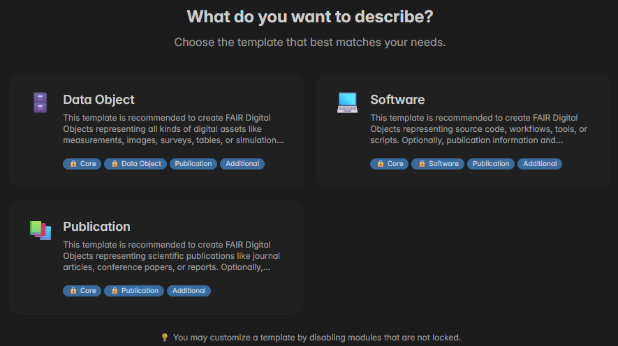

Momentum
Momentum is the FDO creation and publication interface of FDO MoMEnT. It allows you to create new FAIR Digital Objects through an intuitive editor in a module-based fashion organized in customizable, pre-built templates. Automation features and real-time feedback make the FDO creation process as pleasant as possible. Current key features are:
- Module-based editing — Organize FDO attributes into logical sections
- Template system — Start with pre-configured templates for common FDO types
- DOI/Git import — Automatically populate metadata from existing DOIs and Git repositories
- FAIR score calculation — Real-time feedback on the FAIRness of your FDO
- Type registry — Select from a variety of curated attribute types to fully customize your FDO

The Momentum editor provides a structured approach to creating FDOs. It organizes FDO attributes into logical modules, making it easy to fill in the necessary information for your digital object. For your convenience, Momentum offers a selection of templates representing typical combinations of existing modules.
The links below lead you to descriptions of the contained templates and modules. You will learn about their purpose, contents, and good practices. It is recommended to get a first overview from the template descriptions, before you continue with details on contained modules.